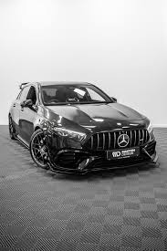
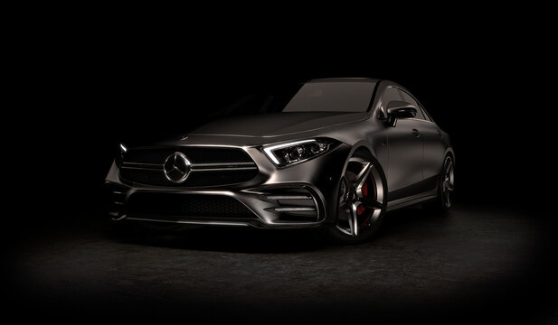

O Legado da Estrela de Prata

Desde o primeiro automóvel de Karl Benz até os hipercarros modernos, a busca pela perfeição continua sendo o nosso motor principal.

Descubra como a Mercedes-Benz está liderando a mobilidade sustentável com luxo e autonomia sem precedentes.

Desde o primeiro automóvel de Karl Benz até os hipercarros modernos, a busca pela perfeição continua sendo o nosso motor principal.

Explore o mundo da engenharia de alta performance, onde cada motor é montado manualmente seguindo a filosofia "Um homem, um motor".